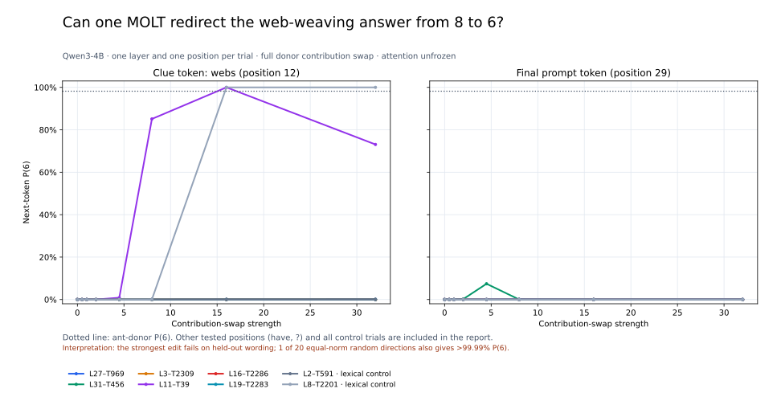

12 October 2026 · SPAR Model Psychology · Qwen3-4B
Can a single MOLT replace an inferred spider with an ant?
The target is to redirect the answer from 8 to 6. Every trial edits one MOLT in one layer at one token position. Attention and the original MLPs recompute normally.

Best sampled semantic-candidate result on the primary question: L11–T39, cue_end, position 12, strength 16; P(6) 99.997747%, P(8) 0.000614%. At the clue token specifically, the best P(6) was 99.997747% with L11–T39 at strength 16.
Interpretation: this flip is prompt-sensitive and is also achievable by one tested random direction of equal magnitude. It does not validate a selective spider-to-ant replacement.
Baseline questions and answers
Primary receiver: How many legs does the animal that weaves webs have? Reply with only one digit.
Ant donor: How many legs does the animal that builds anthills have? Reply with only one digit.
The model generated the expected 8 and 6 before any manipulation. The explicit spider/ant pair is a diagnostic; the silk-web/ant-colony paraphrase is held out from strength selection. Numeric probabilities below are for the single next-token digits 6 and 8, not task accuracy.
Candidate representations
Fresh dashboard coverage: 34 layers and 80,703 observed MOLTs. Georg's Hugging Face release was freshly checked at revision 081ce901b090b64aeecf9bc8709b57c10411e32a: 74 files, weights/configs/README, no label bundle. Dashboard labels and activation examples were used. These candidates are broad animal or arthropod representations; they are not established dedicated spider or ant features. Lexical controls are explicitly marked. The winning L11–T39 is one rank-512 transform, within a 2,560-dimensional residual space.
Exact intervention
Full contribution swap:
edited MLP output = original receiver MLP output
+ strength * (donor MOLT contribution - receiver MOLT contribution)
MOLT contribution = gate(x) * low-rank output(x)
low-rank output(x) = standardized input(x) * V * U * saved output standard deviation
Gate-only control:
delta = strength * (donor gate - receiver gate) * receiver low-rank output
Receiver ablation:
delta = -strength * receiver MOLT contribution
The donor's entire input-dependent contribution is copied in the full swap. U/V weights and the model input are not replaced. The shared output-standardizer mean is not added twice. MOLT gates use the pre-normalization residual, matching the checkpoint's input location; deltas are added to the raw MLP output before residual addition. All layer and position indices are zero based.
Primary clue: token 12, " webs", paired with donor token 12, "ills", the last subtoken of anthills (tokens 11–12 are " anth" + "ills"). Also tested separately: have at 13, ? at 14, and the final prompt token at 29. The last site is a later readout intervention and does not by itself establish a spider-to-ant intermediate reasoning swap. The donor contains no answer digit.
All primary layer/site conditions
Each full-swap row reports the highest P(6) among prespecified strengths 0, 0.5, 1, 2, 4.5, 8, 16, 32. Gate-only controls test 1 and 4.5. The full-MLP donor replacement at strength 1 is a positive control for whether that layer/site can carry the answer change; it is not a MOLT intervention. Inactive gates produce a zero edit and unchanged logits.
Explicit spider-to-ant diagnostic
With the animals explicitly named, the best semantic-candidate edit is L3–T2309, site cue_end, receiver token 8, strength 32: P(6) 99.330091%, P(8) 0.669281%. This diagnostic tests an explicit animal-name intervention rather than the inferred web-weaving animal.
Held-out paraphrase at primary-selected settings
For each MOLT, the layer/site/strength is selected using only the primary question, then replayed on the silk-web/ant-colony pair. Additional fixed strengths 1 and 4.5 are retained in the raw data but not used to select this validation table.
Matched-strength and donor-specificity controls
These follow-up controls were selected after the initial sweep and are reported separately. All use L11–T39 at the clue token, strength 16. Twenty Gaussian directions are scaled to the full intervention's norm for each prompt. On the primary question, one of 20 random directions also produced P(6) >99.99%. The explicitly named ant donor did not reproduce the anthill-donor effect. Thus this is a demonstrated numerical answer flip, not a validated selective spider-to-ant concept replacement.
The same full-contribution edit fails on the held-out wording. A gate-only edit at the same strength succeeds there but fails on the primary wording. No identical tested layer/site/method/strength produced >99% P(6) on both implicit questions in the matched comparisons.
All 60 follow-up control trials
Control results · Full control logits
Verification and limits
927 sweep trials and 60 additional controls verified independently from exported full-vocabulary logits and contribution vectors. Hashes, zero/inactive edit recovery, unchanged upstream states and MLP inputs, one-layer/one-position editing, residual-addition boundary, attention methods, and restored clean output checks passed. Broad labels, activation and a successful answer edit do not independently prove a specific semantic representation or establish general task accuracy. The octopus diagnostic is retained as a model response rather than biological leg-count validation: octopuses have arms.
All trials CSV · Raw results, tokens and protocol · Full logits · Edit vectors · Baseline activations · Independent audit · Figure PDF · Preregistered protocol
Resource cleanup
SPAR instance 55576992 destroyed after verified local backup. Provider reads confirmed no remaining instances or volumes. Ongoing task GPU/storage cost: $0/hour. Cleanup record.